北海道の
グルメを紹介！！
北海道に行ったら絶対食べたい！
海鮮・ラーメン・話題のご当地グルメなどなど
北海道の"うまグルメ"をチェック!
※各グルメの写真を押すとページが切り替わります
道央エリア
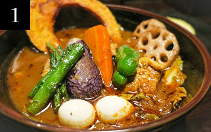
GARAKU
"虜になる"
「スープカレー」
香り高いスパイスと、ゴロっと具材が入ったスープカレー。ひと口すすると、身体にしみわたり、心まであたたまるやさしい味わい。様々な食材を感じられる特別なひと時を味わってみませんか？
MAP
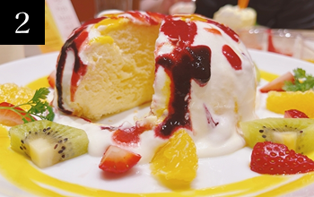
LeTAO
"幸せあふれる"
「スイーツ」
北海道産の素材をたっぷり使ったスイーツ。ひと口味わえば、口の中でとろける濃厚な甘みが広がり、心までふっとほどけるやさしい味わい。今日のご褒美時間をルタオで過ごしてみませんか。
MAP
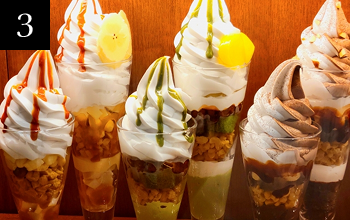
雪印パーラー
"めちゃ濃厚な"
「北海道スイーツ」
北海道産の牛乳とクリームを使った濃厚でなめらかなスイーツが揃う雪印パーラー。定番のソフトクリームや季節のパフェを楽しめ、気軽に立ち寄れるカフェとしてほっとひと息つける時間にいかがですか？
MAP
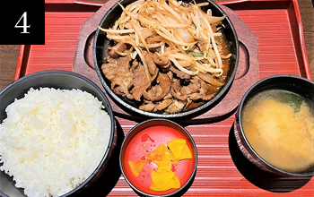
松尾ジンギスカン
"笑顔あふれる"
「ジンギスカン」
松尾ジンギスカンは、厳選された柔らかい羊肉を特製タレで味付けし、炭火で香ばしく焼き上げる道央の名店。肉の旨みと香ばしさを楽しめ、観光客や家族連れにもぴったりの一皿。本場のジンギスカンをいかがですか？
MAP
道南エリア
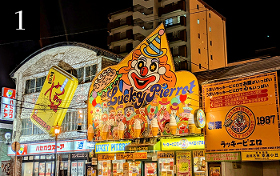
ラッキーピエロ
"定番人気の"
「ハンバーガー」
ここでしか味わえない個性たっぷりのご当地バーガーが魅力。名物のチャイニーズチキンバーガーは一度食べるとクセになるおいしさで、まさに函館のハンバーガーを象徴する存在です。
MAP
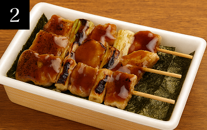
ハセガワストア
"幸せあふれる"
「焼き鳥弁当」
注文を受けてから焼き上げる名物「やきとり弁当」で知られるご当地コンビニ。香ばしいタレと焼きたての豚串がご飯に相性抜群で、旅の途中でも手軽に道南の味を楽しめる一軒です。
MAP
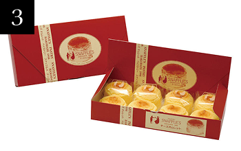
函館洋菓子
スナッフルス
"ふわっととろける"
「チーズオムレット」
函館に来たらぜひ立ち寄りたいスイーツ店。ふわとろチーズオムレットは、口に入れた瞬間に幸せが広がります。お土産にも大人気で、店内でゆったり味わうのもおすすめ。
MAP
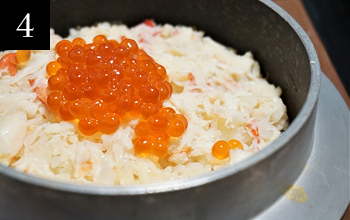
かなやのカニ飯
"一度は食べたい"
「カニ飯」
新鮮なカニをほぐしてご飯と炊き上げた、香ばしくて贅沢な一品。口に入れるとカニの旨味が広がり、旅の思い出にもぴったり。お土産や旅行のお供に最適です。
MAP
道北エリア
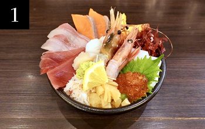
お食事処すみれ
"港町の"「海鮮丼」
地元の海鮮をふんだんに使用。新鮮な海の幸を、たっぷり気軽に楽しめるお食事処すみれ。港町ならではの鮮度と丁寧な仕込みで、一口ごとにおいしいが広がる満足のいっぱいをいかがでしょ？
MAP
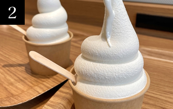
UNO CAFE
"幸せの"「ミルク」
搾りたての放牧ミルクを使用。一口でわかる生乳ソフトクリームの濃厚さとやさしさ。TVで紹介され、人気がさらに加速！ここでしか味わえない放牧生乳の優しい甘さをいかがでしょうか？
MAP
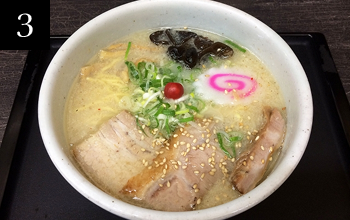
らーめん
山頭火
"旭川発の"
「とろ旨 とんこつ」
とろけるチャーシューにとんこつスープが絡む至福の一杯。寒い日も、ひと口すすれば心までぽっとあたたまるやさしい味わい。身体にしみわたる山頭火の一杯で、今日のご褒美時間を過ごしませんか？
MAP
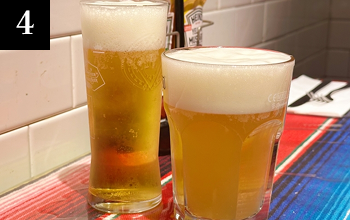
大雪地
ビール館
"飲むほど深まる"
「ビール」
香ばしいグリル料理にジンギスカン、旬の一皿まで揃う大雪地ビール館。できたてクラフトビールと共に味わえば、ひと口ごとに心までほぐれるご褒美時間が訪れます。この街の味を一杯いかがでしょうか?
MAP
道東エリア
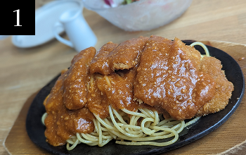
レストラン泉屋
"釧路のソウルフード"
「スパカツ」
ここでしか味わえない熱々の鉄板スパゲティが魅力。名物のスパカツは、ミートソース×とんかつの豪快な組み合わせで一度食べると、忘れられない味わい。釧路の「洋食」を象徴する一品です。満足度の高い一品をいかがですか！
MAP
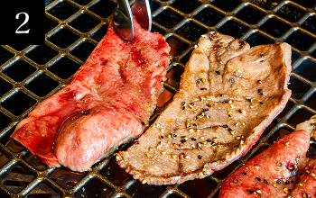
味覚園 総本店
"焼き肉の街の"
「お肉」
北海道産のお肉を使用。炭火で新鮮なおいしいお肉が食べられます！自家製のタレを使って食べてみてください。じゅわっと広がる肉汁と香ばしさが、幸せを運んでくれます。食欲全開の方にピッタリなご当地グルメいかがでしょうか！
MAP
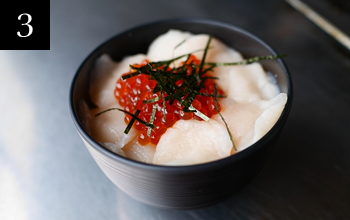
レストハウス
ところ
"ぷりっと新鮮な"
「ホタテ丼」
地元で水揚げ・加工されたものを使用したホタテ丼。「とろけるように甘い」と評判。噛むほどに広がる濃厚な旨みが、旅の思い出をさらに特別なものにしてくれます。北海道らしい海鮮を満喫したい人におすすめ！
MAP
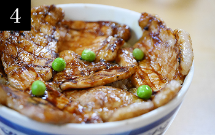
元祖 豚丼の
ぱんちょう
"元祖"「豚丼」
道産の豚ロース肉を使用した豚丼を提供！炭火で香ばしく焼いた豚肉×秘伝の甘辛ダレのコラボ。一枚一枚にしみ込んだ深い旨みが、思わず箸が止まらなくなる"本場の味"を届けてくれます。豚丼が好きな人におすすめ！
MAP